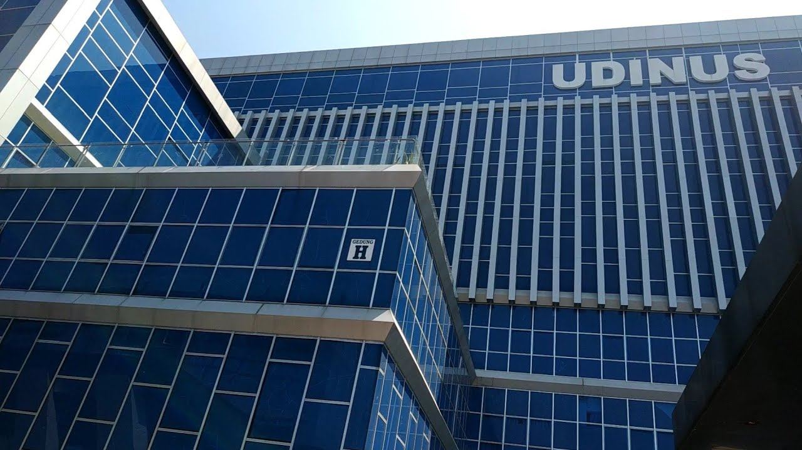

Keseharian seorang Mahasiswa S1 - Teknik Informatika
sambutan
Selamat datang pada Blog saya, disini saya akan memberikan informasi - informasi tentang perkembangan studi saya dan serta hal - hal yang berkaitan
tentang saya pribadi, seperti hobi, profil, dan lain lain. Web Blog ini bertujuan untuk memenuhi tugas submission pada studi saya di Dicoding Akademi Indonesia.
Oleh karena itu, saya membuat Blog sederhana ini dengan teknik - teknik yang sudah diberikan pada course Belajar Pemrograman Web Dasar.
Web Blog ini dibuat dengan menggunakan HTML, CSS dan Javascript yang masih tergolong pada kelas dasar sehingga belum memiliki fitur yang rumit pada pengaplikasiannya,
terimakasih sudah mampir ke Web Blog saya ini Terimakasihh!!.
Terimakasih sudah like 0x
hobi
Saya memiliki beberapa hobi yaitu : koding, bermain game, belajar hal baru, dan mengikuti perkembangan teknologi.
Hobi - hobi tersebut sangatlah mengasikkan bagi saya dan membantu saya untuk menjadi pribadi yang lebih kreatif,
dengan koding saya bisa melatih logika saya tiap harinya dengan membuat algoritma atau hanya styling saja menggunakan HTML dan CSS.
Dengan hobi saya yang suka mengikuti perkembangan teknologi pastinya dapat sangat membantu dalam era globalisasi ini,
dan tidak akan merasa gaptek.
Terimakasih sudah like 0x
tentang saya

Saya adalah Luthfi Kamal Ananda, mahasiswa S1 jurusan Teknik Informatika. Saat ini saya sedang menempuh pendidikan di semester 5 dengan mengikuti
program MSIB Batch 3 yaitu Studi Independen di Dicoding Akademi Indonesia dengan mengambil paket Front End dan Back End.
Saya menempuh pendidikan kuliah ini di Universitas Dian Nuswantoro yang terletak di Semarang, tepatnya Jl. Imam Bonjol No.207, Pendrikan Kidul, Kec. Semarang Tengah, Kota Semarang, Jawa Tengah 50131.
Alasan saya berkuliah di sini karena memang Universitas Dian Nuswantoro atau UDINUS ini terkenal di bidang IT nya, sehingga membuat saya tertarik
untuk melanjutkan studi saya di kampus ini.
Untuk sekarang saya tinggal di Semarang tepatnya di Kecamatan Ngaliyan, yang dekat dengan kampus dan syukurlah tempat ini memiliki lokasi yang sangat strategis.
Saya sudah tinggal di Semarang sejak lahir yaitu selama 20 tahun, dan belum memiliki rencana untuk pindah ke tempat lain.